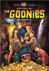
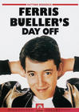
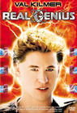
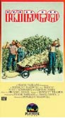
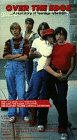
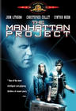
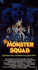
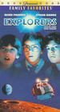
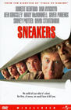

|
|
|
| |
|
 |
Goonies – 1985
If you haven't seen this film, it's over. End your life or move out of America . If you know some one who has not seen this film, never speak to them again and deny ever knowing them. Why does this film rock ? When you're a kid, you don't know the future. Hell, you don't even know the present. Because of this, everything seems possible and everything has a certain quality of magic. So maybe we lose that as we grow up and maybe we don't…that's your own problem. For now, I present a list of films that, like Goonies , shows us what can be done when you are a kid or at least acting like a kid. |
|
|
|
Pump up the Volume – 1990 |
Let's not begin with an overly-analytical approach here, but since analysis is often more funny than not , let's stick with just that.
This film is just too important, so I thought I'd share someone's non-biased analysis I found on the Internet: “This movie really captured not only the disillusionment and pain of adolescence but also the general malaise of our postmodern society .” Thank you, unnamed person who posts life stories on the Web, as you have just made me weep for life. Starring Christian Slater in arguably his best performance, Pump up the Volume presents us with the tale of a student who is shy and unpopular during the day, but at night is a beloved pirate radio show host called Hard Harry. Shakespeare couldn't write monologues as good as what he delivers. Watch it and remember that despite the “general malaise of our postmodern society,” this film is just meant to inspire.
|
Fact: Christian Slater became physically ill several times during filming due to all the cigarette smoking he had to do. (IMDb.com) |
|
|
|
Hackers - 1995 |
I feel slightly embarrassed for my affection to this film. It's cheesy and gimmicky and really has no good acting to speak of. That aside, Angelina Jolie is hot and the soundtrack is amazing. My affection for the film, which I offer up for scrutiny, doesn't just stem from the occasional Jolie nude scene. Despite the ridiculous presentation of how “hacking” is done, this film made me want to know how it is really done . A team of teens save the day – and their own asses, too – by breaking into a supercomputer maintained by a greedy system administrator. The plot description alone should point to its overlooked status by the Academy Awards. However in the end, it is a great film about fighting for something, and that's good enough for me. Oh yeah, and it stars Jolie's boobs . |
Fact: The character name "Emmanuel Goldstein" is taken from George Orwell's novel "Nineteen Eighty-Four". It is also used as a pseudonym by Eric Corley, who publishes the magazine "2600, The Hacker Quarterly". Corley was a consultant for this film. (IMDb.com) |
|
 |
|
Ferris Bueller’s Day Off – 1986 |
“ The key to faking out the parents is the clammy hands . It's a good non-specific symptom; I'm a big believer in it. A lot of people will tell you that a good phony fever is a dead lock, but, uh ... you get a nervous mother , you could wind up in a doctor's office. That's worse than school. You fake a stomach cramp, and when you're bent over, moaning and wailing, you lick your palms. It's a little childish and stupid , but then, so is high school.” |
Fact: In 1990 they actually made this movie into a TV series. No, not “Parker Lewis Can't Lose.” It didn't even make it through the first season, but DVD copies do float around. Jennifer Aniston starred. |
|
 |
|
Real Genius – 1985 |
Val Kilmer's best by far! Playing the smart ass character perfectly as Chris Knight, who has an IQ somewhere close to 200 , the film does inspire you to ask what the hell you've done with your life. But the real genius in this film comes from its dialogue. It's not to be missed:
Chris Knight : So, if there's anything I can do for you, or, more to the point, to you, you just let me know.
Susan : Can you hammer a six-inch spike through a board with your penis?
Chris Knight : Not right now.
Susan : A girl's gotta have her standards.
Or, try this:
Mitch : Did you know there's a guy living in our closet?
Chris Knight : You've seen him too?
Mitch : Who is he?
Chris Knight : Holyfield.
Mitch : Why does he keep going into our closet?
Chris Knight : Why do you keep going into our closet?
Mitch : To get my clothes - but that's not why he goes in there!
Chris Knight : Of course not, he's twice your size - your clothes would never fit him!
Mitch : Yeah...
Chris Knight : Think before you ask these questions, Mitch! Twenty points higher than me? Thinks a big guy like that can wear his clothes? |
Fact: The recurrence of the initials "DEI" in the movie is no accident. The truck that is used to transport the popcorn to Dr. Hathaway's new house has "Drain Experts Inc." emblazoned on its side. The company Chris interviews with at the beginning (and which funds Dr. Hathaway's show "Everything") is Darlington Electronic Instruments. The initials are rumored to have been inscribed by Caltech alumni at (among other places) the summit of Everest, on the Moon, and on many satellites and space probes manufactured at Jet Propulsion Labs (which sits just up the hill from Caltech in Pasadena). There has long been an unofficial contest to see who could place the letters DEI into the most prominent public view. Their placement in Real Genius was with the full complicity of director Coolidge and her Caltech advisor, Dave Marvit. (IMDb.com) |
|
 |
|
Kid Co. – 1984 |
So maybe I'm full of shit . Kid Co. certainly is. Sounding more like a rival of Tyco than a movie, the plot centers around a band of kids who start their own business at 10 years old selling horse shit. Eventually corporate America takes notice and wants to shut them down. This is a film that anyone needs to see before the internal cynic is allowed to come out. Fantastic, of course, but the theme is grounded, and could inspire any child (and most adults). After a legal victory at the end of the film, the courthouse is surrounded with kids with banners cheering on their pint-sized heroes : “In Kids We Trust,' 'Peter Pan Lives," "Children's Coalition," "Kids Liberation" "Suffrage for Kids" and "Equal Rights for Kids." Amazing.
|
Fact: Kid Co. was a real company started by 10-year-olds. They made so much money selling crap that they bought an entire town and revamped it for themselves. |
|
 |
|
Over the Edge – 1979 |
The word on the Web is that this film will finally be making its way to DVD this year. If it does, you must own it. Based on a true story, the movie follows the children of a new suburb in Arizona . The children, being the good Gen-Xers that they are, are sick of being mistreated. When the parents get together to decide what to do about their children, the kids lock them up in the school and blow it up. Yes, blow it up.
Kurt Cobain even said in multiple interviews that this was his favorite movie ever. Rarely seen – the studio decided not to run it in theaters, as it might be too controversial – it ran only on HBO. The film also marks the acting debut of Matt Dillon. |
Fact: Charles S. Haas, one of the writers for Over the Edge , based his story on true events which occurred in the planned community of Foster City , California in the early ‘70s. In fact, a California headline about the incident, "Mouse Packs: Kids On A Crime Spree ," was authored by Haas when he was a reporter with the San Francisco Examiner . |
|
 |
|
The Manhattan Project -1986 |
When I was a teenager starting off in high school, my concerns primarily focused on women and the pursuit of women. After a while I even may have matured and pursued other avenues, like music and sports. I wrote a little and dreamed big. One thing, however, I did not do. Not only did I not do it, I never even thought about it. Not for one second. I never built my own nuclear bomb in a shed after school. But who can resist a plot like that? For his science project, this kid builds a nuclear bomb. Now he has to defuse the damn thing. Did you know the only two things you need to steal weapons grade plutonium are a semi-hot girl and a remote control car? Go watch the film! |
Fact: At the very end when they stop the countdown, the timer reads 7:16:45 . July 16, 1945 was the date of the Trinity test where the first atomic bomb was detonated in New Mexico . (IMDb.com) |
|
 |
|
The Monster Squad - 1987 |
Wolfman's got nards ! Wolfman's got nards!
It doesn't get much better than this, folks. Take every MGM monster from the 1930s through the 1950s, throw them at the cast of The Goonies and you have this film. The film is funny and smart in its ability to really give homage to the MGM creatures of old with both style and cinematography. |
Fact: The introduction of each monster in the film is a reenactment of that monster's intro from their films from the ‘30s, ‘40s and ‘50s. |
|
 |
|
Explorers – 1985 |
Well, if you haven't picked up on the theme yet, this one should nail it home for you. Are there kids in this film? Of course. And this is the film debut of both Ethan Hawke and River Phoenix. Do they do something no kid has ever done? Glad you asked, for in fact they do. What is it? Well, ladies and gentlemen, they build a space ship out of a tilt-a-whirl car . Of course. Yes, as far fetched as that may seem, three kids invent a new form of space exploration and go off on an adventure to meet the first intelligent life forms not from our planet. You know … kid stuff. Amazing!
|
Fact: Look for Rosebud, the sled from Citizen Kane , in the junkyard sequence. As the camera pans at one point, you can clearly see the sled. (IMDb.com) |
|
 |
|
Sneakers - 1992 |
So maybe the cast isn't full of kids, but they sure as hell act like them. And they, too, are doing amazing things. Robert Redford leads this all-star cast of River Phoenix, Sidney Poitier and Dan Aykroyd as a team of expert thieves and sleuths paid to break into businesses to tell you how people can break into business. I always wanted the job of being paid for being a crook . The soundtrack is amazing and the level of authenticity and the humor the film pulls off is astounding.
|
Fact: Whistler is seen eating a box of Cap'n Crunch. In the 1970s, Cap'n Crunch came with a small whistle in the box. A phone phreaker called Captain Crunch discovered that this whistle could be used to get free phone calls, Whistler is patterned after Joe Engressia, a blind telephone expert born with perfect pitch who was one of the original phone phreakers. (IMDb.com) |
|